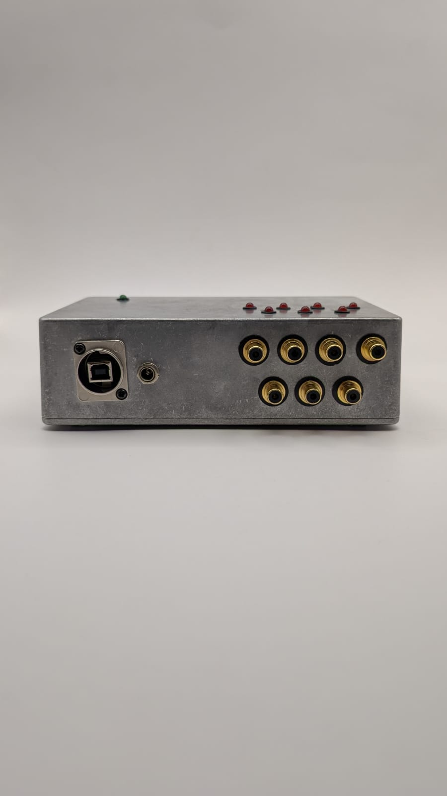
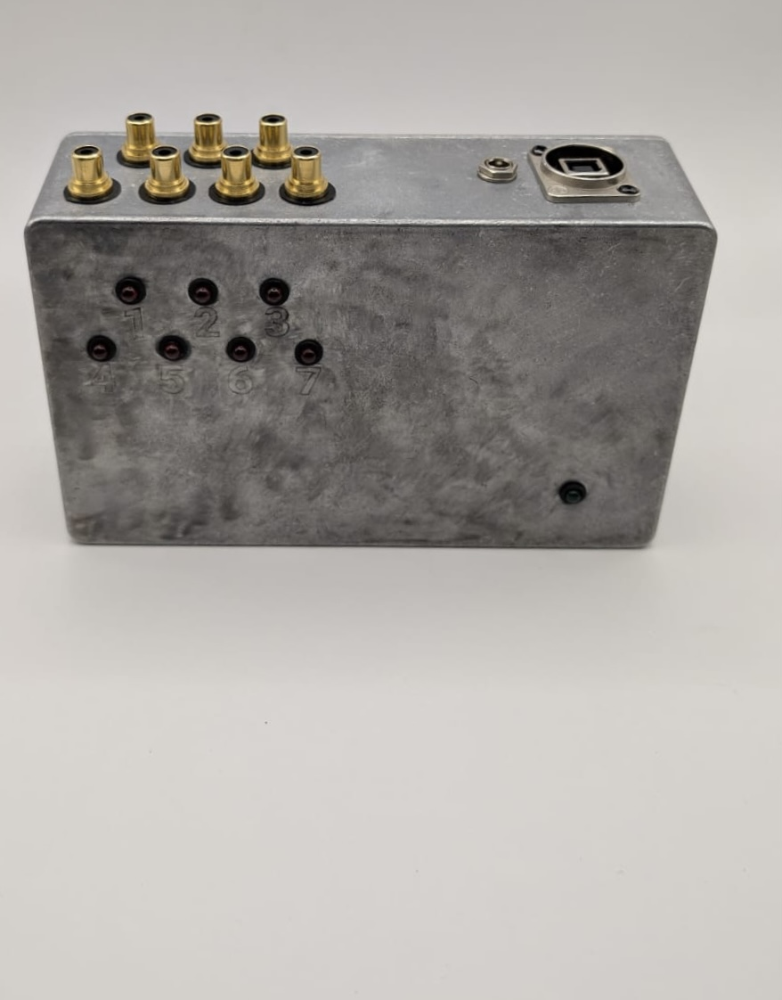
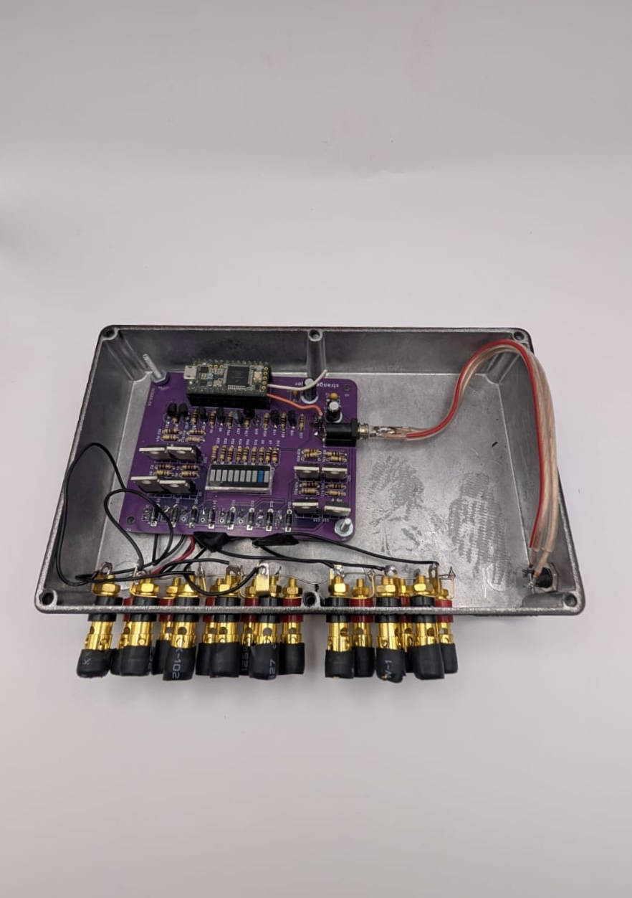

← Volver a proyectos
Máquina percutora MIDI
Modelado 3D · Fabricación · 2025Caja de aluminio para una máquina percutora controlada por MIDI: por fuera, siete salidas numeradas y un puerto USB para la señal; por dentro, una placa con microcontrolador que traduce esa señal en pulsos eléctricos para cada percutor.


